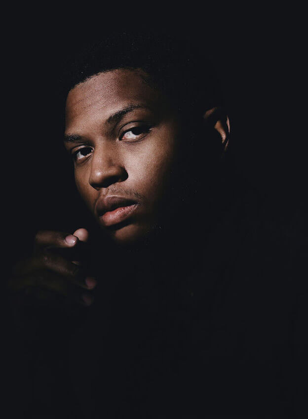
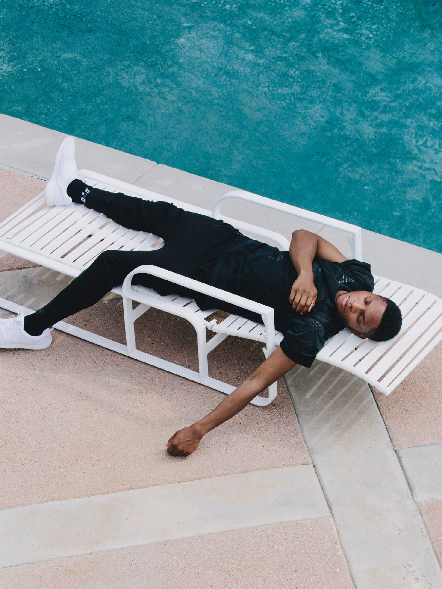

MUSIC - INTERVIEW
GALLANT
Last May, Gallant made his Tonight Show debut. After Jimmy Fallon introduced the 24-year-old singer as “the next big thing in R&B,” he appeared, perched on a leather loveseat with a striped throw blanket and embroidered pillows. The stage was decked with houseplants, stacks of books atop sleek wooden side tables, a small TV set broadcasting static fuzz. In the soft glow of a handful of lamps scattered around him, he crooned the opening falsetto notes of his breakout hit “Weight in Gold.”
You might expect the stage’s calculated design—dark, moody, intimate—to carry over into Gallant’s home in Sherman Oaks, CA, but the walls of his bedroom are stark white and bare; the nightstand is IKEA. On a Saturday morning between national tours, he sits on the edge of his bed in ripped blue jeans and slippers, sipping coffee from a paper cup. Nothing about the man before me today suggests the potential to go ape shit on national television. Last night, there was a giant party at the house (which also functions as an office for Gallant’s management company, Th3rd Brain), but he spent the evening holed up in his bedroom playing Settlers of Catan with three close friends. “That was my party,” he says. “When I was a kid, my circle was pretty small,” Gallant recalls. “I think I was always the kid at the barbecue who was just quiet, who just didn’t talk to anyone. I’d have like one family member that I’d get really tight with, and that would be it.” My first interaction with him rings true to this. Back in February, I’d gone to his house to hear his debut album, Ology. Over production from long-time collaborator Stint, Gallant’s voice sailed through the living room, but the singer was nowhere in sight. Dark metaphors lent images to his inner turmoil—I’m a headless horseman on quilted sand dunes / with my neck wide open, I pray for refuge. When the album was finished, he emerged, took a seat on the floor, uttered a few modest Thank You’s in response to heaps of praise. The album was brimming with raw emotion; the man behind it was deadpan and soft-spoken.
Press began to circulate as Ology neared its springtime release, painting Gallant as a shy artist from a small suburban town (Columbia, Maryland) who downloaded and digested whole R&B discographies in his youth, honed his craft at NYU, found a home in LA after New York City chewed him up and spit him out, found himself through fearless self-analysis on his debut LP. It’s an accurate portrayal, sure, and a story to which I’d dedicate more page space were I not writing this piece several months outside of the album cycle, still wrestling to understand Gallant’s peculiar Jekyll-and-Hyde quality. Since I met him, I’ve only grown more fascinated by this division between the low-key dude I’ve encountered and the loose cannon he becomes on stage; the guy who would cap off his commanding SXSW Fader Fort performance high atop of a stack of speakers, tugging at electrical wires and unleashing his piercing falsetto, only weeks after he told me he considers himself an introvert.
“I was always the kid at the barbecue who was just quiet, who just didn’t talk to anyone.”
“When I get on stage, it kind of allows me to express myself in way that I feel like I don’t really have the opportunity to,” he says. “I think that kind of mirrors the process of writing lyrics that I don’t feel like I have the opportunity to say face to face with someone.” I’ve searched for signs that could characterize Gallant as a brooding artist type; some kind of despair bubbling beneath the surface to account for lyrics like I’m begging for more time before I’m buried deeper in the trenches of insanity. Nothing’s turned up yet. One thing I’ve noticed is that Gallant will often divert the topic of conversation from himself back onto me. “You seem like the kind of person—you could just go around whoever and be fine with it,” he remarked during our discussion of introverts and extroverts, before asking if I’d feel comfortable eating alone at a sit-down restaurant. “I’ve never found it to do anything for me to talk about myself or my own experience,” he says when I point out this tendency. “I just don’t think there’s anything to learn from that.” It’s a confounding observation from someone who writes songs about his experience and sits through interviews about himself for a living.
She wants the nitro when she herself’s a box of TNT, he sings on “Percogesic.” She thinks I can make her better. Determined to uncover some of the tender spots laid bare on Ology—the heartache, anguish, insecurity—I ask about his love life. “For whatever reason, I’ve always been the guy who’s just really cynical and skeptical about relationships,” he responds. “I haven’t been able to make a connection that I thought was really genuine or long-lasting. A lot of the stuff that sounds kind of romantic on the album—minus maybe one or two songs—is really kind of talking about my relationship with myself.” His responses come off as somewhat polished—not in a way that feels disingenuous, but rather forces me to imagine a version of myself that I’d feel safe sharing with a world of strangers. What would I say to someone asking me to open up today, if I knew it could turn into a headline or pull-quote tomorrow? What does it feel like to spend a day with someone whose job is to figure me out? The best part about my job is being able to share intimate moments with the creators of the music I love. The self-satisfied feeling that comes with an artist saying “good question,” and revealing something personal to me. My time with Gallant, however, reminds me that there’s a strange sense of entitlement built into the interview dynamic. If I’m doing it right, it will feel just like any other conversation—but it’s not, because I’m responsible for weaving whatever you tell me into a story to be consumed by an audience. You are a puzzle, and I am going to solve you.
 Back to the top